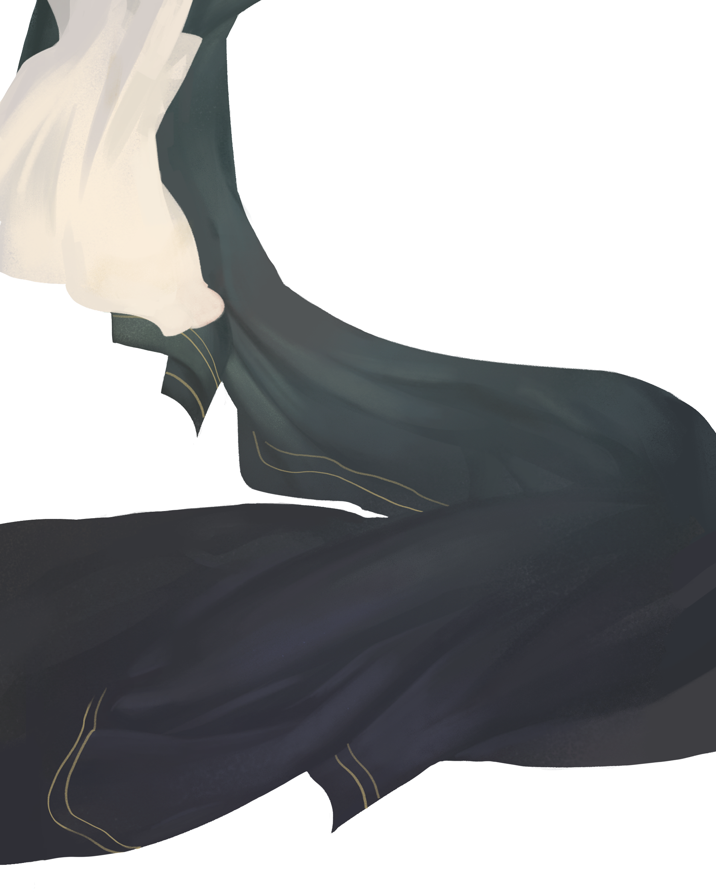
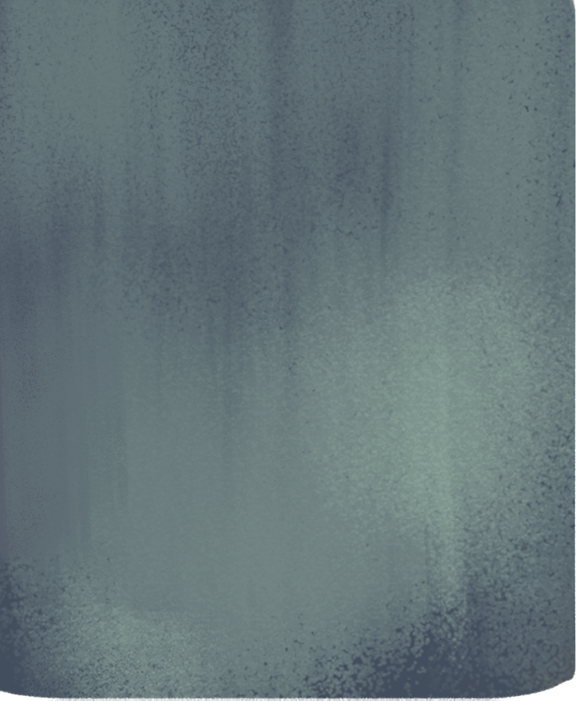
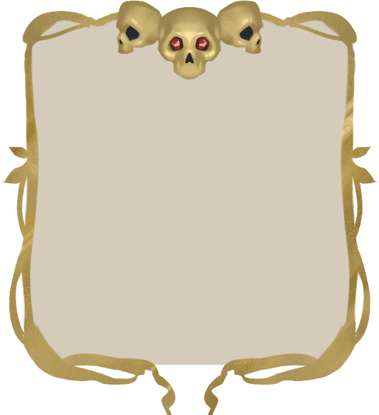

Viii-VII век до нашей эры
Информацию о том, как греки
представляли себе загробную
жизнь в этот период, также
позволили нам узнать
произведения Гомера.



Произведения Гомера являются отражением
самого народа, поскольку в них описаны те
добродетели, к которым его представители
стремились, и то, что народ полагал для себя
важным.
В «Илиаде» и «Одиссее» нельзя найти
личное отношение автора к описываемому,
в них нет критики или чего-то, что могло бы
выразить личность автора.
Мир гомера населён
богами и людьми.
Боги испытывают эмоции
и могут взаимодействовать
с людьми, но свободны от
смерти.
Люди, напротив, смертны,
что и определяет их судьбу.
Только в это время в
мифологии появляются
полубоги — дети богов
и людей, живущие среди
смертных, полные жизни
и радости, несмотря на
уготованный им короткий
век.
Они всегда готовы к
сражениям и не боятся
смерти.
В дальнейшем подобных
связей между людьми и
богами не происходило.


Древние греки считали дыхание
явственным признаком жизни.
Диафрагма служит местом
обитания души, в котором
также сосредоточены желания,
эмоции и воля человека.

После смерти душа выходит из
тела и превращается в двойника
человека.
Она может находиться в мире
живых, пока не будет совершен
похоронный обряд, но никак не
сможет общаться с людьми.

После погребального обряда
душа отправляется в Аид,
куда может попасть сама
или при помощи бога Гермеса.
Загробное царство носит
то же имя, что и его
владелец – Аид.
В Аид могут попасть только мертвые,
но в мифологии встречаются исключения.
В Аиде души не сохраняют образ живых, они
утрачивают все свои воспоминания, не могут
думать и чувствовать. Это царство мрака,
туманного существования и небытия.
Аид сын Крона. Крон правил
в «золотом веке», когда все
было идеально.
Тогда считалось, что после смерти
праведные люди попадают в элизиум,
или на острова блаженных, где они
жили счастливо, а те, кто жил неправедно,
заключались в тартар.
Суд над ними вершили
живые в день кончины,
во время расставания
души с телом. Этот суд
был несправедлив.

ЭЛИЗИЙ
Аид, которому во владения досталось
загробное царство, постоянно жаловался
Зевсу, что к нему попадают люди, которые
не заслуживают блаженства или наказания.
Из-за этого Зевс забрал у людей дар
предвиденья и оставил его только умершим,
жрецам и оракулам.


Отныне суд происходил после смерти, и судьёй мог быть
только мертвый, чтобы он мог судить в согласии с душой.
Судьями Зевс назначил своих сыновей: Миноса, Радоманта и Эйака.